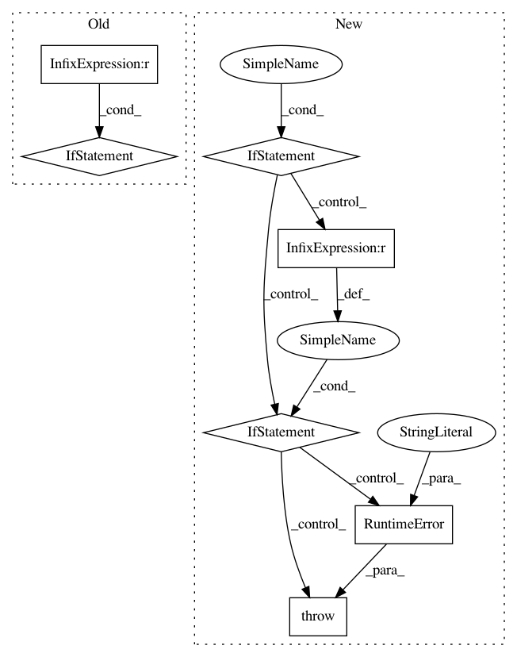

d44475866914c19f23c0f8a833951f9989250334,gpytorch/kernels/kernel.py,Kernel,__init__,#Kernel#Any#Any#Any#Any#Any#Any#Any#,88
Before Change
self.register_parameter(
name="log_lengthscale", parameter=torch.nn.Parameter(torch.zeros(batch_size, 1, lengthscale_num_dims))
)
if lengthscale_prior is not None:
self.register_prior("lengthscale_prior", lengthscale_prior, lambda: self.lengthscale)
@property
def has_lengthscale(self):
return self.__has_lengthscale
After Change
* Default: No lengthscale (i.e. :math:`\Theta` is the identity matrix).
* Single lengthscale: One lengthscale can be applied to all input dimensions/batches
(i.e. :math:`\Theta` is a constant diagonal matrix).
This is controlled by setting `has_lengthscale=True`.
* ARD: Each input dimension gets its own separate lengthscale
(i.e. :math:`\Theta` is a non-constant diagonal matrix).
This is controlled by the `ard_num_dims` keyword argument (as well has `has_lengthscale=True`).
In batch-mode (i.e. when :math:`x_1` and :math:`x_2` are batches of input matrices), each
batch of data can have its own lengthscale parameter by setting the `batch_size`
keyword argument to the appropriate number of batches.
.. note::
The :attr:`lengthscale` parameter is parameterized on a log scale to constrain it to be positive.
You can set a prior on this parameter using the :attr:`lengthscale_prior` argument.
In pattern: SUPERPATTERN
Frequency: 3
Non-data size: 7
Instances
Project Name: cornellius-gp/gpytorch
Commit Name: d44475866914c19f23c0f8a833951f9989250334
Time: 2018-11-17
Author: balandat@fb.com
File Name: gpytorch/kernels/kernel.py
Class Name: Kernel
Method Name: __init__
Project Name: pfnet/optuna
Commit Name: 5abd67cfe591d58c41af5fedeff06bda057c6d55
Time: 2020-11-09
Author: imamura@ms.k.u-tokyo.ac.jp
File Name: optuna/trial/_frozen.py
Class Name: FrozenTrial
Method Name: value
Project Name: IDSIA/sacred
Commit Name: 958e50b6eddf4fe101cdd8aabf755e8843256b37
Time: 2016-12-01
Author: qwlouse@gmail.com
File Name: sacred/experiment.py
Class Name: Experiment
Method Name: __init__